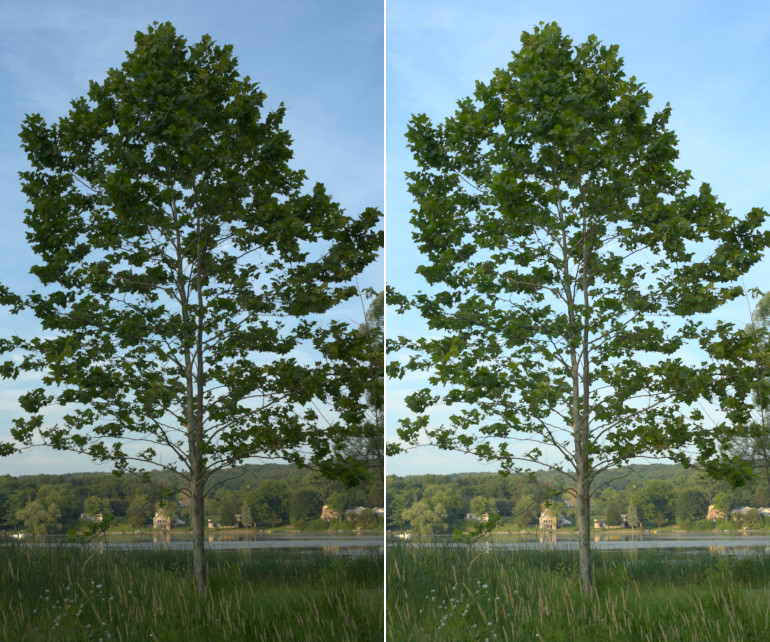
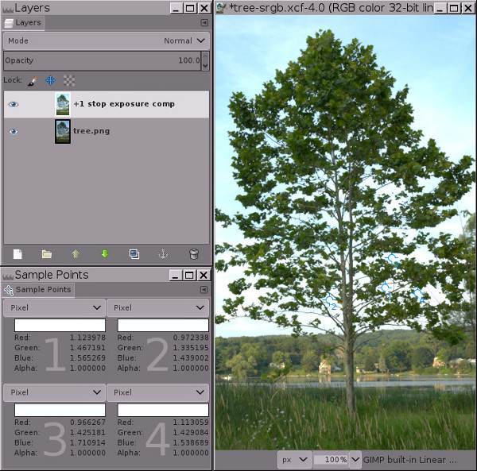
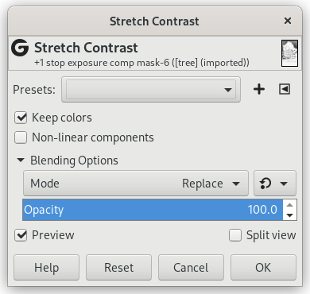
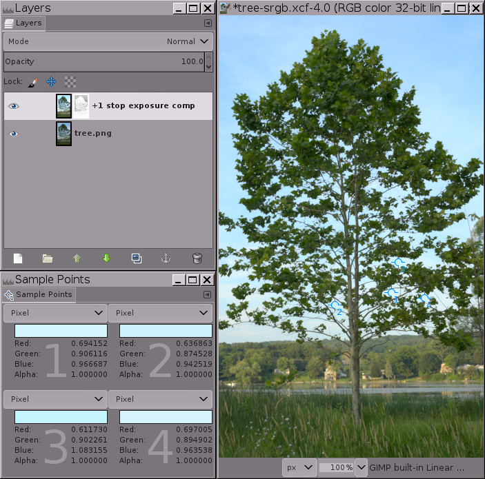

Figura 2

Usando operação Exposição de grande profundidade de bits do GIMP para iluminar o chão em uma parada sem estourar porções do céu.
-
Esquerda: A imagem original, um arquivo bruto de câmera interpolado que foi deliberadamente subexposto em câmera para evitar estourar o céu. Pode não parecer o caso, mas esta imagem já está muito próxima de possuir valores de canais RGB fora da gama no céu, e um simples Esticamento Automático de Contraste não irá clarear a imagem de forma alguma.
-
Direita: A mesma imagem após usar a operação Exposição de grande profundidade de bits do GIMP em precisão linear de 32 bits em ponto flutuante para adicionar uma parada de compensação de exposição positiva. Uma máscara de tons de cinza invertida foi utilizada para impedir os tons claros de estourarem.
Este exemplo passo-a-passo providencia uma amostra de imagem e é dividido em cinco passos, começando com o download da imagem. Passos 3, 4 e 5 descrevem o procedimento em si.
-
Baixe tree.png, que é uma imagem sRGB de números inteiros em 16 bits. O GIMP de grande profundidade de bits de fato é um editor de imagens “somente sRGB”, então o melhor é nem tentar editar em outros espaços de trabalho RGB.
-
Abra a tree.png no GIMP e atribua o perfil embutido sRGB (as cores da imagem não mudarão em nada). Então, converta a imagem para precisão linear de ponto flutuante em 32 bits.: Selecione → → , e na janela deConversão de codificação, selecione Luz linear (isto garantirá que o modo de mistura de cores Normal produzirá resultados radiometricamente corretos).
-
Faça uma cópia da camada “tree.png” através de → ou → , e nomeie-a “comp exposição +1 parada”. Então, use → para adicionar uma parada de compensação de exposição positiva. A Figura 3 abaixo mostra as configurações apropriadas para a janela da operação Exposição, e a Figura 4 mostra o resultado:
Figura 3

Usando a operação Exposição para adicionar uma parada de compensação de exposição positiva.
Ao usar a operação Exposição para adicionar uma parada de compensação de exposição positiva, certifique-se de que a imagem realmente está com precisão de ponto flutuante, porque precisão de números inteiros limitará os tons claros.
Figura 4

Em precisão de ponto flutuante, a operação Exposição do GIMP é irrestrita. Isto significa que você pode utilizar a operação Exposição para adicionar compensação de exposição positiva sem estourar os tons claros.
Perceba os valores dos canais RGB para os quatro pontos de amostragem: a informação do canal que teria sido cortada pelo uso de precisão de número inteiro está codificada usando valores de canais que são maiores do que 1,0 em ponto flutuante.
A imagem na Figura 4 claramente tem tons claros “estourados” no céu. Mas os tons claros não estão realmente estourados (isto é, cortados para 1,0 em um ou mais canais). Em vez disso, a informação de tom claro ainda está lá, mas os valores de canais RGB estão fora do intervalo do valor de exibição em canal RGB de 0,0f a 1,0f. O diálogo de pontos de amostragem na Figura 4 acima mostra quatro pontos de amostragem que possuem valores de canais RGB maiores do que 1,0. Como mostrado na Figura 5 abaixo, adicionar uma máscara permite recuperar estes tons claros trazendo-os de volta para o intervalo de exibição.
Se você utilizou precisão de número inteiro em vez de ponto flutuante, os tons claros realmente seriam estourados: Os pontos de amostragem teriam valores de canal máximos de 255, 65535 ou 4294967295, dependendo da profundidade de bits. E aplicar uma máscara somente “recuperaria” uma grande área de cinza, com ausência total de detalhes (teste pessoalmente e veja o que acontece).
-
Adicione uma máscara de camada de tons de cinza invertida: Clique com o botão direito na camada e selecione → → , e quando o diálogo Adicionar Máscara de Camada aparecer, escolha Cópia em tons de cinza da camada e marque a opção Inverter máscara.

Como mostrado na Figura 5 abaixo, a esta altura os tons claros serão trazidos de volta para o intervalo de exibição, o que significa que todos os valores de canais RGB estão entre 0,0f e 1,0f. Mas a imagem provavelmente parecerá um pouco estranha (meio enevoada e achatada), e dependendo da imagem, os tons claros mais brilhantes podem até ter borrões escuros — não se preocupe! Isto é temporário.
Figura 5

Resultado de adicionar uma máscara de camada de tons de cinza invertida para trazer os tons claros de volta ao intervalo de exibição.
Adicionar uma máscara de camada de tons de cinza invertida traz os tons claros de volta ao intervalo de exibição, mas a esta altura a maioria das imagens parecerá achatada e enevoada, e algumas imagens terão borrões escuros nos tons claros. O próximo passo — “Esticamento Automático de Contraste” realizado na máscara — cuidará deste problema.
-
Clique na máscara de camada para selecioná-la para edição, e então selecione → → :

“Manter Cores” deve ser marcado (embora isso não importe de fato para imagens em tons de cinza, como máscaras de camada).
A Figura 6 abaixo mostra o resultado final:

Fazer → → na máscara de camada remove o aspecto “enevoado”, deixando uma imagem lindamente clareada com tons claros intactos.
→ → na máscara é necessário porque, da mesma forma que a camada da imagem possui valores de canais RGB fora da gama, a máscara de tons de cinza invertida também contém valores de tons de cinza fora da gama. → → traz todos os valores da máscara de tons de cinza de volta para o intervalo de exibição, permitindo que a máscara compense proporcionalmente os valores de canais RGB da camada que de outra forma estariam fora da gama, mascarando mais os tons claros e pouco/não de todo mascarando as sombras e tons médios da imagem.
Note que um dos pontos de amostragem ainda possui um valor de canal RGB azul que está ligeiramente fora da gama. O jeito mais fácil de lidar com isso é usando → e arrastando o triângulo do seletor do meio para fazer um ajuste de Gama de 0,45 na máscara, não na camada da imagem de fato. Você pode fazer este ajuste de Gama ou na máscara inteira (funciona bem, menos esforço), ou apenas nas sombras da máscara (que correspondem aos tons claros da camada). Neste último caso, você carregaria a máscara como uma seleção, inverteria a seleção, e então faria o ajuste de gama. Ou, se os valores de canal fora da gama estiverem apenas ligeiramente fora da gama, faça uma camada “Nova a partir do visível" e então use → → no resultado para trazer o resto dos valores de canais de volta para a gama.
Este é o procedimento completo para usar a operação Exposição para adicionar uma parada de compensação de exposição positiva às sombras sem estourar os tons claros. Agora, você pode ou fazer ajustes finos à máscara ou simplesmente criar uma camada “Nova a partir do visível” e continuar editando a sua imagem lindamente clareada. Dependendo da imagem e também de suas intenções artísticas para ela, a máscara pode não precisar de ajuste fino. Mas muito frequentemente você quererá modificar a distribuição de tons resultante por meio de uma correção de gama, ou talvez uma operação Curvas na máscara, ou então pintando diretamente sobre a máscara. E algumas vezes você desejará borrar a máscara para restaurar o micro contraste.